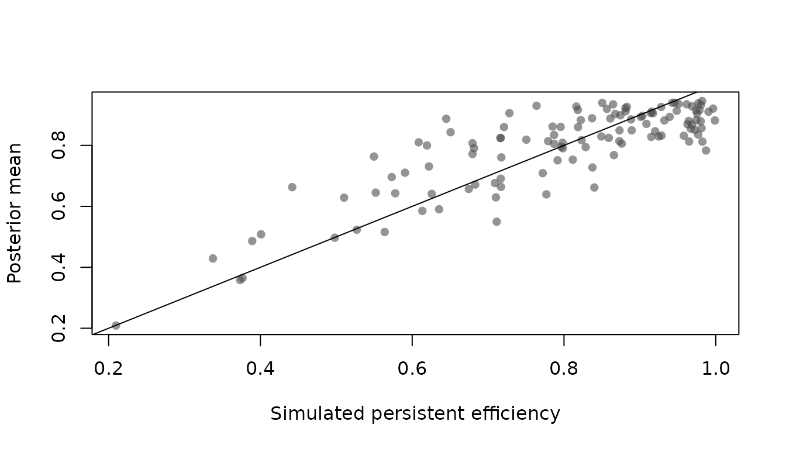

The time-invariant panel model of create_sfmodel_exp()
gives each unit a single inefficiency term held fixed over its
observations. Two things follow, and both are usually wrong.
Every persistent difference between units is booked as inefficiency. A bank with an unusual funding structure, a farm on poorer soil, a plant with older equipment: all of it lands in and depresses the score, whether or not it has anything to do with how well the unit is run.
And nothing can move. A model whose inefficiency term is constant within a unit cannot answer whether efficiency improved over the sample, which is often the question that motivated the exercise.
The four-component model of Kumbhakar, Lien and Hjalmarsson (2014), Colombi et al. (2014) and Tsionas and Kumbhakar (2014) splits the disturbance into
with an unrestricted unit effect, persistent inefficiency, noise and transient inefficiency. The unit effect absorbs heterogeneity that is not inefficiency; the two one-sided terms separate what does not move from what does.
The chain is the one the rest of the package uses. id is
required here, since the components cannot be separated without repeated
observations.
d <- sim_sf4(n = 120, n_time = 8, beta = c(1, 0.5, 0.3),
sigma_v = 0.2, sigma_mu = 0.15, par_eta = 4, par_u = 6)
model <- create_sfmodel4_exp(y ~ x1 + x2, data = d, id = "id",
iterations = 4000, burnin = 1000)
model <- add_priors(model,
lambda_eta = list(r_star = 0.9),
lambda_u = list(r_star = 0.9))
model <- add_seed(add_initial_values(model), 99)
model <- add_posterior_coefficients(model)
summary(model)
#> Four-component Bayesian stochastic frontier model
#>
#> Call:
#> create_sfmodel4_exp(formula = y ~ x1 + x2, data = d, id = "id",
#> iterations = 4000, burnin = 1000)
#>
#> Frontier: production
#> Inefficiency: exponential, persistent and transient
#> Observations: 960
#> Units: 120
#> Draws: 4000 after 1000 burn-in, thinning 1
#>
#> Posterior summary, 95% credible bands:
#> mean sd 2.5% median 97.5%
#> (Intercept) 0.9676 0.0539 0.8285 0.9739 1.0584
#> x1 0.4824 0.0088 0.4655 0.4825 0.4995
#> x2 0.3003 0.0088 0.2829 0.3002 0.3171
#> sigma_v 0.2148 0.0169 0.1874 0.2125 0.2566
#> sigma_mu 0.1304 0.0325 0.0696 0.1295 0.1993
#> lambda_eta 3.9610 0.6706 2.8917 3.8850 5.4828
#> lambda_u 8.1224 4.4699 5.3766 6.7509 23.5517
#>
#> Posterior mean overall efficiency, per observation:
#> mean min median max
#> 0.6980 0.1554 0.7350 0.8928The two one-sided terms are elicited separately, each from its own
prior median efficiency. Note that those anchors apply per component:
with r_star = 0.9 for each, the prior median of the overall
efficiency
is near 0.81.
This is what the model is for.
pers <- efficiency(model, type = "persistent")
tran <- efficiency(model, type = "transient")
over <- efficiency(model, type = "overall")
c(persistent = nrow(pers), transient = nrow(tran), overall = nrow(over))
#> persistent transient overall
#> 120 960 960Persistent efficiency is one score per unit and transient efficiency one per observation, so they answer different questions. The first is what an investment or a policy would have to change; the second is what management can move within the year.
plot(exp(-attr(d, "eta")), pers$mean,
xlab = "Simulated persistent efficiency", ylab = "Posterior mean",
pch = 16, col = grey(0.3, 0.6))
abline(0, 1)
The unit effect enters none of the three scores. That is the point: in the two-component model it has nowhere to go but into inefficiency.
two <- create_sfmodel_exp(y ~ x1 + x2, data = d, id = "id",
iterations = 4000, burnin = 1000)
two <- add_posterior_coefficients(add_priors(two))
c(four_component_persistent = mean(pers$mean),
two_component = mean(efficiency(two)$mean))
#> four_component_persistent two_component
#> 0.7952616 0.7494072and are both constant within a unit and are told apart only by the sign restriction on and by the distributional assumptions. The combination is determined sharply; how it divides between the two depends on which has the wider spread.
mu_hat <- colMeans(model$posterior$mu$coeffs)
eta_hat <- colMeans(model$posterior$eta$coeffs)
c(combination = cor(mu_hat - eta_hat, attr(d, "mu") - attr(d, "eta")),
unit_effect = cor(mu_hat, attr(d, "mu")),
persistent = cor(eta_hat, attr(d, "eta")))
#> combination unit_effect persistent
#> 0.9629172 0.4747065 0.8804201Repeating the exercise with a unit effect twice as wide and a persistent term half as large reverses which of the two comes out well, while leaving the combination untouched:
d2 <- sim_sf4(n = 120, n_time = 8, beta = c(1, 0.5, 0.3),
sigma_v = 0.2, sigma_mu = 0.3, par_eta = 8, par_u = 6)
m2 <- create_sfmodel4_exp(y ~ x1 + x2, data = d2, id = "id",
iterations = 4000, burnin = 1000)
m2 <- add_posterior_coefficients(add_priors(m2))
mu2 <- colMeans(m2$posterior$mu$coeffs)
eta2 <- colMeans(m2$posterior$eta$coeffs)
c(combination = cor(mu2 - eta2, attr(d2, "mu") - attr(d2, "eta")),
unit_effect = cor(mu2, attr(d2, "mu")),
persistent = cor(eta2, attr(d2, "eta")))
#> combination unit_effect persistent
#> 0.9620027 0.8915641 0.2717041This is a property of the model rather than of the sampler, and it is
the reason to run a prior sensitivity check on sigma_mu and
on the persistent inefficiency parameter before reading much into the
split. The frontier itself, and the transient scores, are
unaffected.
The same trade-off shows up in the chain: and can swap against each other from sweep to sweep. Starting several chains from the prior is worth the time here.
base <- add_priors(create_sfmodel4_exp(y ~ x1 + x2, data = d, id = "id",
iterations = 2000, burnin = 1000))
chains <- lapply(1:3, function(i) {
m <- add_seed(add_initial_values(base, method = "prior"), i)
m <- add_posterior_coefficients(m, keep_u = FALSE)
c(sigma_mu = mean(m$posterior$sigma_mu$coeffs),
lambda_eta = mean(m$posterior$lambda_eta$coeffs),
lambda_u = mean(m$posterior$lambda_u$coeffs))
})
round(do.call(rbind, chains), 3)
#> sigma_mu lambda_eta lambda_u
#> [1,] 7363185.443 0.000 0.000
#> [2,] 15.600 19.850 7.258
#> [3,] 8.814 9.277 6.699add_posterior_loglik() refuses this model, and with it
selection_criteria(). Integrating out the unit effect and
the persistent term couples the observations of a unit, so the
likelihood does not factorise over them. A closed form does exist — the
closed skew normal of Colombi et al. (2014) — but it needs normal
distribution functions of dimension
,
which this package does not implement.
Colombi, R., Kumbhakar, S. C., Martini, G., & Vittadini, G. (2014). Closed skew normal distribution and efficiency analysis. Journal of Productivity Analysis, 42(2), 123–136.
Kumbhakar, S. C., Lien, G., & Hjalmarsson, L. (2014). Technical efficiency in competing panel data models: A study of Norwegian grain farming. Journal of Productivity Analysis, 41(2), 321–337.
Tsionas, E. G., & Kumbhakar, S. C. (2014). Firm heterogeneity, persistent and transient technical inefficiency: A generalized true random-effects model. Journal of Applied Econometrics, 29(1), 110–132.